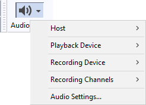

How to set up Audacity
Setting Up Audacity
The easiest way to set aup your audio inputs and outputs in Audacity is to use the Audio Setup Toolbar.
Click on the button in the the top tooldock
- 
Here you can make your device settings, for details please see Audio Setup Toolbar.
Device Toolbar alternative
As another alternative you can use the old Device Toolbar which is not displayed by default in Audacity. To enable it, click on and check on Device Toolbar.

Monitoring
Decide if you want to "monitor" your recording, that is hear it played back as you make it.
Audible input monitoring
Using Audible input monitoring you can route the input to the output through the computer enabling you to hear what you are recording. All such methods have latency and cause extra load on the computer.
- In Audacity for all platforms: Choose Audible input monitoring in Recording Preferences or under the menu.
- Windows: On some machines you can instead select your input in Windows "Sound", choose "Properties" then on the "Listen" tab, choose "Listen to this device". This usually has less latency than Audacity's Audible input monitoring.
- Linux: Most modern Linux systems use ALSA and Pulse Audio with no Audible input monitoring module installed. ALSA has the optional alsaloop playthrough module in alsa-utils and PulseAudio has an optional module-loopback, but these modules may have noticeable latency and audio breakup. Linux distributions specifically for music or media applications are likely to have JACK pre-installed, in which case low latency Audible input monitoring can be configured in QjackCtl. </ul>
Hardware playthrough
If hardware playthrough is required, usually only needed for overdubbing, it is best to use an external USB or FireWire audio device that has a headphones jack for no-latency monitoring (such as the Behringer UCA 202 USB or Zoom H2 USB).
Set the volume level of your recording input
Left-click on the microphone icon or right-click in the Recording Meter and click "Enable Silent Monitoring".
- If the Recording Meter is not visible, click and check Recording Meter Toolbar.
- While playing a loud part of your tape or record, adjust the Recording Slider on the Recording Meter Toolbar so the Recording Meters are almost reaching the right-hand end of the scale.
- Do not let the meter bars actually reach the right edge, or the red hold lights to right of the meter will come on, indicating you will have distortion in the recording.
- Try to aim for a maximum peak of around minus 6 dB (or 0.5 if you have your meters set to linear rather than dB).
- Enlarging the Recording Meter Meter Toolbar by clicking and dragging the resizer on the right edge of the toolbar helps with this task. See Customizing Toolbar Layout for more details.
Links
> Forward to: Basic Recording, Editing and Exporting